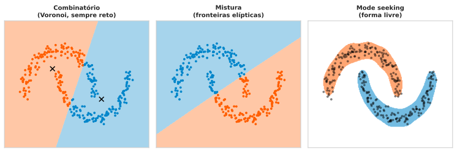
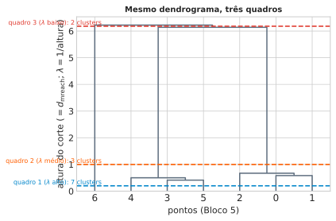
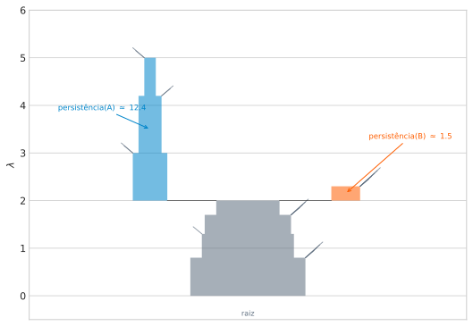

Aula 3: Topografia de Densidade e Grafos — Clustering Hierárquico e HDBSCAN
Aprendizado Não Supervisionado
Marcos M. Raimundo — Instituto de Computação, UNICAMP
2026-08-30
Revisão e Introdução
Revisão Rápida: Da Aula 1 à Aula 2
- Aula 1: forma paramétrica fixa para \(p(\mathbf{x})\) (ex.: gaussiana).
- Aula 2: abandona a forma fixa — \(p(\mathbf{x})=K/(NV)\), fixar \(K\) dá \(k\)-NN (com \(d_K(\mathbf{x})\) como subproduto), fixar \(V\) dá KDE.
Duas limitações em ambos: sem forma paramétrica, os dados são o modelo; e ambos sofrem a maldição da dimensionalidade — volta no bloco final desta aula, com os \(30\) atributos do Breast Cancer Wisconsin.
A Aula 2 já mostrou que \(d_K(\mathbf{x})\) seria reaproveitada como métrica de densidade local para construir caminhos num grafo — é esse reaproveitamento que esta aula cumpre.
Nota
A paisagem \(p(\mathbf{x})\) responde “comum ou raro?” ponto a ponto — mas não diz com quais outros pontos um ponto forma um grupo.
Ideia Central
Pergunta nova, ainda sem resposta: dado um conjunto de pacientes, quais são parecidos o bastante entre si para merecer o mesmo rótulo?
Saber que um ponto está numa região densa não diz, sozinho, com quais outros pontos ele forma um grupo.
Duas regiões densas separadas por um vale raso: dois grupos. Dois pontos na mesma região densa e contígua, mesmo geometricamente distantes: um grupo só.
“Comum ou raro” é propriedade de um ponto isolado; “parecido com quem” é propriedade de conjuntos de pontos. Essa segunda pergunta é clustering — o objeto desta aula.
Roteiro da Aula
Transformar uma paisagem de densidade numa partição de grupos se desdobra em quatro perguntas, uma por bloco:
1. Densidade sozinha não define grupo — o que deveria significar “cluster”?
2. Como construir isso computacionalmente, sem escolher quantos grupos existem a priori?
3. Isso é um problema de grafos — qual estrutura captura toda a hierarquia de clusters de uma vez?
4. Como decidir quais clusters encontrados são reais, e quais são flutuação amostral?
Problema Motivador
Duas luas entrelaçadas (sintético, controlado). Mesma ferramenta da Aula 2 — KDE — aplicada aqui: qual é a paisagem de densidade?
A paisagem mostra duas cristas conectadas, cada uma acompanhando uma lua, separadas por um vale visível — mesmo as duas luas se entrelaçando geometricamente. Pergunta nova, que a Aula 2 nunca fez: não “qual a densidade aqui”, mas “onde termina uma crista e começa a outra” — uma pergunta sobre conectividade, não sobre o valor da densidade num ponto isolado.
A resposta óbvia a olho nu (duas cristas) não tem nada a ver com “perto de um centro fixo”: as duas pontas de cada lua estão, em linha reta, tão longe uma da outra quanto de pontos da lua vizinha — o que as une é a crista de densidade alta que as conecta, não a proximidade a um ponto central.
Pergunta
A paisagem de densidade acima parece ter, a olho nu, duas cristas separadas por um vale. Isso já resolve sozinho o problema de encontrar os grupos, ou falta alguma coisa?
Dica: pense se “ter uma paisagem de densidade” é a mesma coisa que “ter uma lista de quais pontos pertencem a qual grupo” — e o que teria que acontecer, algoritmicamente, para ir de um para o outro.
- □ Basta calcular \(p(\mathbf{x})\) em cada ponto do dataset e aplicar um limiar fixo \(\lambda\): os pontos acima do limiar já vêm automaticamente rotulados por grupo, sem nenhum passo adicional.
- □ Se toda a paisagem de densidade fosse uma única crista, sem nenhum vale separando regiões, não existiria estrutura de cluster genuína a recuperar — qualquer partição imposta sobre ela seria arbitrária.
- □ Já que a Aula 2 responde “esse ponto é comum ou raro?” para cada ponto isolado, basta ordenar os pacientes por densidade estimada e cortar a lista ao meio para obter os dois grupos verdadeiros, em qualquer dataset com exatamente dois grupos.
- □ Numa aplicação de detecção de fraude com dois golpes bem distintos, cada um formando sua própria concentração no espaço de atributos, a mesma lógica de “componente conectada de uma região de alta densidade” se aplicaria para separar os dois tipos de fraude entre si, mesmo sem nunca ter visto o rótulo do tipo de golpe.
Resposta
Resposta — densidade x grupo
- ✗ Um limiar sozinho diz quais pontos estão “acima” — não diz quais desses pontos formam a mesma componente conectada; isso exige um passo algorítmico a mais (o resto desta aula).
- ✔ Sem vale nenhum separando regiões, não há estrutura de cluster genuína — qualquer corte imposto seria arbitrário.
- ✗ Ordenar por densidade e cortar ao meio ignora conectividade espacial — nada garante que os pontos mais densos formem um único grupo geometricamente coerente.
- ✔ A lógica de componente conectada de alta densidade transfere para qualquer domínio com concentrações bem separadas, não só para os exemplos vistos aqui.
Voltando à pergunta: densidade ponto a ponto (Aula 2) é matéria-prima, não o produto final — falta o passo de transformar essa paisagem numa partição de grupos, exatamente o que o resto da aula constrói.
Intuição — Vales e Montanhas
A Aposta Desta Aula
Pense em \(p(\mathbf{x})\) como uma paisagem: montanhas = regiões densas, vales = regiões raras.
Um cluster é uma montanha inteira — não importa o formato do contorno, só que seja um bloco conectado de terreno alto, separado dos outros por um vale.
Algoritmo: não “que centro fixo está mais perto?”, mas “caminhando por terreno alto, até onde eu chego sem descer a um vale?”
Uma lua inteira, mesmo curva, é uma trilha alta conectada de ponta a ponta — mesmo que as duas pontas estejam geometricamente longe em linha reta.

Os Números Por Trás da Figura
Duas luas: HDBSCAN (o algoritmo desta aula) \(=100\%\) de acurácia contra o rótulo verdadeiro.
Dois anéis concêntricos (forma ainda mais hostil à ideia de “bola em torno de um centro” — o anel externo envolve o interno por todos os lados): HDBSCAN também \(=100\%\).
Nenhum dos dois resultados depende de saber, de antemão, a forma certa do cluster.
O Que Falta Nomear
(i) Formalizar “montanha” como conjunto de nível de densidade (Bloco 3).
(ii) Transformar isso num grafo, com uma distância que “sabe” onde é vale e onde é montanha (Bloco 4).
(iii) Extrair desse grafo uma única estrutura com toda a hierarquia de clusters possível, de uma vez (Bloco 5).
Pergunta
Duas montanhas separadas por um vale raso (densidade baixa, mas não zero) — “andar por terreno alto” as trata como um cluster só, ou dois?
Dica: pense no que muda se o vale for rebaixado ainda mais, até chegar a densidade zero, comparado ao vale raso original.
- □ Se o vale entre as duas montanhas nunca é totalmente seco (densidade sempre estritamente positiva em todo o caminho), então, para qualquer limiar de altura \(\lambda\) suficientemente baixo, existe um caminho de terreno “alto o bastante” ligando as duas montanhas — então, nesse limiar, elas formam um cluster só.
- □ A pergunta “cluster só ou dois clusters” tem uma resposta fixa, independente de qual altura \(\lambda\) se usa para definir “terreno alto”.
- □ Se o vale for rebaixado até ter densidade exatamente zero em algum ponto do caminho, nenhum limiar \(\lambda>0\) jamais conecta as duas montanhas por cima desse ponto.
- □ Um vale raso entre duas montanhas altas é evidência de que, na verdade, os dados vieram de uma única população, e a divisão em duas montanhas é sempre um artefato de estimação.
Resposta
Resposta — cluster só ou dois clusters?
- ✔ Vale nunca seco → para \(\lambda\) baixo o bastante, existe caminho alto conectando — um cluster só nesse limiar.
- ✗ A resposta depende de \(\lambda\) — é exatamente por isso que “cluster” vira uma hierarquia indexada por \(\lambda\), não uma resposta única (Bloco 3).
- ✔ Vale com densidade exatamente zero em algum ponto: nenhum \(\lambda>0\) conecta por cima desse ponto — barreira genuína.
- ✗ Vale raso não é evidência de “sempre um artefato” — pode ser estrutura real (duas subpopulações genuinamente distintas, ainda que próximas).
Voltando à pergunta: a resposta depende de \(\lambda\) — e é exatamente essa dependência que o Bloco 3 transforma em definição formal.
Conjuntos de Nível de Densidade
O Esqueleto Abstrato da Metáfora
Corte transversal 1D: eixo \(\mathbf{x}\), densidade \(p(\mathbf{x})\) no eixo vertical — duas “montanhas” separadas por um “vale”.

Limiar \(\lambda\) (linha vermelha): \(L_\lambda\) = trecho do eixo onde a curva está acima da linha — aqui, 2 componentes, uma por montanha (o vale fica abaixo de \(\lambda\)).
Baixar \(\lambda\) até abaixo da altura do vale funde as duas componentes numa só — verificado a seguir com densidade real (KDE, duas luas).
Formalizando “Montanha”
Conjunto de nível de densidade, limiar \(\lambda\ge 0\): \[L_\lambda = \{\mathbf{x} : p(\mathbf{x}) \ge \lambda\}\]
Definição central da aula: um cluster, num nível \(\lambda\) fixo, é uma componente conexa de \(L_\lambda\) — não precisa ser convexa, só precisa ser percorrível inteira sem descer abaixo de \(\lambda\).
Três Paradigmas de Clustering (ESL, p. 507)
Combinatório (Bloco 2): sem modelo de densidade — parte o espaço por proximidade a um conjunto fixo de protótipos. Sempre gera regiões convexas (tesselação de Voronoi); não captura luas nem anéis.
Modelagem por mistura (Aula 4): assume densidade paramétrica com \(K\) componentes (ex.: \(K\) gaussianas) — cluster = “de qual componente este ponto veio?”, estimado por EM.
“Mode seeking” (esta aula): não assume forma nenhuma — estima as modas da densidade diretamente. Tradução livre (p. 507): “observações mais próximas de cada moda definem os clusters.”
Os três respondem à mesma pergunta (“quem vai com quem?”), com suposições bem diferentes sobre a forma dos dados — só o terceiro não assume nenhuma.
Os Três, Lado a Lado

Combinatório e mistura só sabem traçar fronteiras retas/elípticas — cada lua fica cortada ao meio. Só o mode seeking (direita), sem suposição de forma, acompanha o contorno real de cada lua.
O Que Acontece Variando \(\lambda\)
\(\lambda\) alto: só os picos mais extremos sobrevivem — poucas regiões pequenas, bem separadas.
\(\lambda\) caindo: cada região cresce; em algum ponto, duas regiões antes separadas se tocam e se fundem.
\(\lambda=0\): \(L_0\) é o suporte inteiro — uma componente só (supondo suporte conexo).
Hierarquia indexada por \(\lambda\): decrescer \(\lambda\) só funde componentes, nunca separa — mesma lógica do dendrograma (Bloco 5).

Nenhum \(\lambda\) é “o Certo”
\(\lambda=0{,}20\): as duas luas são regiões separadas de \(L_\lambda\).
\(\lambda=0{,}04\): o vale entre as luas já foi absorvido — uma componente conexa só.
Problema aberto: qual \(\lambda\) escolher? Resposta no Bloco 6 — não escolher um único \(\lambda\), medir persistência ao longo de toda a faixa.
Pergunta
No limite \(\lambda \to \infty\), quantas componentes conexas tem \(L_\lambda\), em geral?
Dica: pense no que sobra de “terreno acima de \(\lambda\)” quando \(\lambda\) é maior que a densidade máxima de qualquer região dos dados.
- □ No limite \(\lambda\to\infty\), \(L_\lambda\) é, em geral, o conjunto vazio — nenhum ponto do espaço tem densidade infinita, então nenhum ponto sobrevive ao limiar.
- □ O número de componentes conexas de \(L_\lambda\) é uma função monótona não-crescente de \(\lambda\) — nunca aumenta conforme \(\lambda\) sobe (pode diminuir ou ficar igual, indo a zero no limite).
- □ Existe sempre um \(\lambda\) finito tal que \(L_\lambda\) tem exatamente uma componente conexa por moda (pico local) da densidade — desde que os picos tenham alturas suficientemente diferentes entre si e o \(\lambda\) seja escolhido logo abaixo do menor pico relevante.
- □ Se a densidade \(p(\mathbf{x})\) é estritamente positiva em todo o espaço \(\mathbb{R}^d\) (nunca toca zero, mesmo longe dos dados), então \(L_\lambda\) para \(\lambda\) pequeno mas positivo pode ainda ter mais de uma componente conexa, dependendo de como \(p\) varia.
Resposta
Resposta — o limite \(\lambda \to \infty\)
- ✔ \(\lambda\to\infty\): \(L_\lambda\to\emptyset\), em geral (nenhuma densidade real é infinita).
- ✔ Número de componentes é não-crescente em \(\lambda\) — só funde subindo, nunca divide.
- ✔ Existe \(\lambda\) que isola cada moda, se as alturas forem bem diferentes e o limiar for escolhido com cuidado.
- ✔ Mesmo com \(p>0\) em todo lugar, \(L_\lambda\) pequeno-positivo pode ter várias componentes — “positivo” não é “uniformemente alto”; pode haver vales rasos acima de zero mas abaixo de \(\lambda\).
Voltando à pergunta: o vale raso do Bloco 2 agora tem nome — depende inteiramente de onde \(\lambda\) corta. Os Blocos 4 a 6 constroem, em etapas, uma ferramenta computável que termina não dependendo de escolher \(\lambda\) à mão.
DBSCAN
O Que é o DBSCAN
Bloco 3: cluster via \(L_\lambda\) — exige estimar \(p(\mathbf{x})\) (KDE) e escolher \(\lambda\). DBSCAN (Ester, Kriegel, Sander & Xu, 1996) ataca a mesma ideia de um jeito mais direto — só contar vizinhos num raio, sem estimar densidade nenhuma.
Dois parâmetros: raio \(\varepsilon\) e contagem mínima minPts. \(N_\varepsilon(p)=\{q:d(p,q)\le\varepsilon\}\) conta o próprio \(p\) (convenção Ester et al. 1996 / scikit-learn).
Ponto Núcleo
\(p\) é núcleo se \(|N_\varepsilon(p)|\ge\text{minPts}\) — tem gente suficiente por perto, incluindo ele mesmo.
Conexão, Cadeia e Cluster
Dois núcleos \(p,q\) conectam diretamente se \(d(p,q)\le\varepsilon\). Um cluster é uma cadeia dessas conexões — fecho transitivo, definição recursiva: \(p\) e um \(z\) distante podem cair no mesmo cluster sem \(d(p,z)\le\varepsilon\), desde que exista uma cadeia de núcleos entre eles.
Ponto não-núcleo a \(\le\varepsilon\) de algum núcleo = borda (entra no cluster, mas não propaga a cadeia adiante). Quem sobra = ruído.
O Algoritmo, por Extenso
1. \(p\) é núcleo se \(\ge\) minPts pontos (contando \(p\)) estão a \(\le\varepsilon\) dele.
2. Escolha um núcleo ainda não visitado, abra um cluster novo, ponha-o numa fila.
3. Tire \(q\) da fila; todo vizinho \(r\) a \(\le\varepsilon\) entra no cluster; se \(r\) também é núcleo e não visitado, marque-o e acrescente-o à fila — só núcleos propagam a busca (a cadeia).
4. Repita até a fila esvaziar; volte ao passo 2 para o próximo núcleo não visitado.
5. Quem nunca entrou em nenhum cluster vira ruído.
\(d_K(\mathbf{x})\), Um Uso Novo
Checar “\(p,q\) conectam?” exige duas verificações (núcleo? núcleo? distância?). Dá pra colapsar numa única comparação — e é o que falta pra montar um grafo pesado (Bloco 5).
Aula 2: \(p(\mathbf{x})\approx K/(NV)\), \(V\) = volume da bola de raio \(d_K(\mathbf{x})\) que captura \(K\) vizinhos. \(V\) cresce com \(d_K\) — o raio está no denominador do estimador.
Não é coincidência: \(d_K(\mathbf{x})\) pequeno \(\Rightarrow\) bola pequena bastou \(\Rightarrow\) região densa; \(d_K(\mathbf{x})\) grande \(\Rightarrow\) precisou de raio grande \(\Rightarrow\) região rara.
Hoje: mesmo número, novo nome — core distance — \(\mathrm{core}_K(\mathbf{x}) = d_K(\mathbf{x})\) — e novo uso: peso de aresta num grafo.
Premissas Desta Derivação
Nota
1. \(\mathrm{core}_K(x)\) pequeno \(\Leftrightarrow\) região densa.
2. Distância bruta \(d(a,b)\) não diz nada sobre densidade da vizinhança de \(a\) ou \(b\).
3. Cluster = conectividade dentro de terreno alto — a distância do grafo precisa penalizar caminhos por regiões raras.
Por Que a Distância Bruta Não Basta
\(a\) numa região densa (muita gente parecida por perto); \(b\) sozinho, longe de todo vizinho — mas \(d(a,b)\) pequeno.
Conectar \(a,b\) pela distância bruta ignora que \(b\) está, na prática, isolado — \(b\) só “parece” perto de \(a\), sem trilha densa ligando os dois.

A Construção, Passo a Passo
\[d_{\mathrm{mreach}}(a,b) = \max\bigl(\mathrm{core}_K(a), \mathrm{core}_K(b), d(a,b)\bigr)\]
Se \(b\) está isolado (\(\mathrm{core}_K(b)\) grande): \(d_{\mathrm{mreach}}(a,b) \ge \mathrm{core}_K(b)\) para qualquer \(a\) — \(b\) nunca parece mais perto de ninguém do que permite sua própria distância ao vale mais próximo.
Se \(a,b\) moram na mesma região densa: \(d_{\mathrm{mreach}}(a,b)\) continua pequeno — a distância bruta domina o máximo.
Nunca aproxima, só afasta: \(d_{\mathrm{mreach}}(a,b)\ge d(a,b)\) sempre — acalma isolados sem alterar nada dentro de uma região já densa.
# Núcleo pequeno (K=5) sobre os dois atributos reais que vão sustentar
# o Bloco 6 -- ilustra a "calma" da alcançabilidade mútua em 5 pacientes
# escolhidos deliberadamente: 4 numa vizinhança densa, 1 isolado.
_tree_2d = cKDTree(X_2d)
_core_2d = core_distance(X_2d, K=5)
_isolado = np.argmax(_core_2d) # paciente com o maior core distance
_denso = np.argsort(_core_2d)[:4] # 4 pacientes na região mais densa
_a, _b = _denso[0], _isolado
_d_raw = np.linalg.norm(X_2d[_a] - X_2d[_b])
_d_mreach = max(_core_2d[_a], _core_2d[_b], _d_raw)
print(f"core({_a})={_core_2d[_a]:.3f} core({_b})={_core_2d[_b]:.3f} "
f"d_bruta={_d_raw:.3f} d_mreach={_d_mreach:.3f}")core(418)=0.033 core(461)=1.288 d_bruta=5.388 d_mreach=5.388Pergunta
Se \(\mathrm{core}_K(a) = \mathrm{core}_K(b) = 0\) (dois pontos coincidentes com pelo menos \(K\) outros pontos na mesma posição exata), o que \(d_{\mathrm{mreach}}(a,b)\) vale?
Dica: releia a fórmula — o que o \(\max\) faz quando dois dos três termos são zero?
- □ Se \(\mathrm{core}_K(a)=\mathrm{core}_K(b)=0\), então \(d_{\mathrm{mreach}}(a,b) = d(a,b)\) — a distância bruta passa a decidir sozinha, porque os dois termos de núcleo não competem com ela no máximo.
- □ \(d_{\mathrm{mreach}}(a,b)\) sempre vale zero quando pelo menos um dos dois core distances é zero, independente do valor de \(d(a,b)\).
- □ Num caso extremo em que \(d(a,b)=0\) também (os próprios \(a\) e \(b\) coincidem exatamente), \(d_{\mathrm{mreach}}(a,b)=0\).
- □ Esse caso extremo (core distance zero) é impossível de ocorrer na prática com dados reais, então não precisa ser considerado ao implementar a fórmula.
Resposta
Resposta — o caso extremo \(\mathrm{core}_K=0\)
- ✔ Com os dois núcleos em zero, \(d_{\mathrm{mreach}}(a,b)=d(a,b)\) — a distância bruta decide.
- ✗ Não basta um dos dois ser zero — o outro ainda entra no \(\max\); só se ambos forem zero (ou menores que \(d(a,b)\)) a bruta domina.
- ✔ Com os três termos em zero, o máximo é zero.
- ✗ Dados reais com valores repetidos/arredondados (ex.: medições discretizadas) produzem core distance zero com frequência — o caso precisa, sim, ser tratado.
Voltando à pergunta: quando ambos os núcleos são pequenos (região densa dos dois lados), a alcançabilidade mútua colapsa na distância bruta — exatamente o comportamento que o Bloco 5 vai usar para construir o grafo completo.
Como Isso Vira o DBSCAN da Seção Anterior
Escolha um limiar \(\varepsilon\). Monte o grafo: aresta \((u,v)\) sempre que \(d_{\mathrm{mreach}}(u,v)\le\varepsilon\) — uma única comparação, em vez de núcleo + núcleo + distância separadamente.
Componentes conexas = clusters. Pontos sem aresta nenhuma (\(\mathrm{core}_K\) maior que \(\varepsilon\)) ficam isolados = ruído.
Por Dentro da Equivalência
Detalhe que importa: \(N_\varepsilon(p)\) conta o próprio \(p\) (convenção do DBSCAN original/scikit-learn), mas \(\mathrm{core}_K(p)\) não conta \(p\). O \(K\) certo é \(K=\text{minPts}-1\), não \(\text{minPts}\) (verificado numericamente contra o DBSCAN do scikit-learn).
Com \(K=\text{minPts}-1\): “\(p\) núcleo” \(\iff\) \(\mathrm{core}_K(p)\le\varepsilon\) — a própria definição de core distance.
Logo: “\(p,q\) núcleos e \(d(p,q)\le\varepsilon\)” \(\iff\) \(\max(\mathrm{core}_K(p),\mathrm{core}_K(q),d(p,q))\le\varepsilon\) \(\iff\) \(d_{\mathrm{mreach}}(p,q)\le\varepsilon\) — mesma aresta, mesmo grafo, mesmos clusters (DBSCAN*, Campello, Moulavi & Sander 2013).
O Desafio que Sobra
DBSCAN/\(d_{\mathrm{mreach}}\) funcionam, mas exigem fixar \(\varepsilon\) e minPts/\(K\) a priori, sem critério óbvio — o resultado muda bastante conforme esses valores mudam.
Saída mais palpável: construir a hierarquia inteira, variando \(\varepsilon\) de \(0\) a \(\infty\), e decidir depois onde cortar — clustering hierárquico.
Clustering Hierárquico
Sentir o Número de Clusters, sem Fixar um Corte
Bloco 4 terminou num desafio: DBSCAN exige fixar \(\varepsilon\) e minPts/\(K\) sem critério óbvio. Clustering hierárquico ataca isso diferente: constrói a sequência inteira de partições, de \(N\) clusters a \(1\), e só depois decide onde cortar.
Essa ideia, sobre a hierarquia de \(d_{\mathrm{mreach}}\), é o que o Bloco 6 (HDBSCAN) usa pra extrair clusters sem escolher \(\lambda\) à mão.
O Algoritmo: Aglomerativo por Ligação Simples
Começa com \(N\) clusters, um por ponto; a cada passo funde os dois clusters mais próximos num só — \(N-1\) fusões até sobrar um cluster com todo mundo, cada fusão num nível de dissimilaridade maior que a anterior. Essa sequência é a hierarquia (o dendrograma).
Falta definir “distância entre dois clusters” (não entre dois pontos). A regra desta aula, ligação simples: distância entre clusters = distância do par mais próximo, um de cada lado. ESL (p. 523), tradução livre: “a dissimilaridade intergrupo [é] a do par mais próximo: \(d_{SL}(G,H)=\min_{i\in G,i'\in H} d_{ii'}\)” — o “vizinho mais próximo”.
O custo de fazer isso ingenuamente: recalcular, a cada uma das \(N-1\) fusões, qual par de clusters está mais próximo parece exigir refazer tudo pra cada \(k\) diferente. Atalho: uma única estrutura, \(N-1\) arestas, contém a hierarquia inteira de uma vez — a Árvore Geradora Mínima (MST).
O Que é uma Árvore Geradora
Grafo completo, pesos \(d(i,j)\): \(N\) vértices, \(N(N-1)/2\) arestas — conectado, mas redundante (vários caminhos possíveis entre o mesmo par).
Árvore geradora (spanning tree): subgrafo que conecta todos os \(N\) vértices com só \(N-1\) arestas, sem ciclo — o mínimo de arestas que ainda mantém tudo ligado.
A Árvore Geradora Mínima (MST)
Entre todas as árvores geradoras possíveis, a MST é a que minimiza a soma dos pesos das suas \(N-1\) arestas.
Teorema (Gower & Ross, 1969)
Equivalência MST–Ligação Simples
Para todo limiar \(\tau\): as componentes conexas do grafo completo restrito a arestas \(\le\tau\) são idênticas às componentes obtidas cortando da MST só as arestas \(>\tau\).
(\(\subseteq\)) MST \(\subseteq\) grafo completo — todo caminho na MST cortada já é um caminho no grafo completo cortado. Direção fácil.
(\(\supseteq\), a direção que importa) Se \(p,q\) conectam no grafo completo em \(\tau\), existe algum caminho de custo \(\le\tau\) (custo = maior aresta do caminho, o “elo mais fraco”).
Propriedade do Caminho de Gargalo Mínimo
O caminho entre \(p\) e \(q\) dentro da MST (único) sempre tem o menor custo possível entre todos os caminhos de \(p\) a \(q\) no grafo completo — resultado clássico de teoria de grafos.
Logo o caminho da MST entre \(p,q\) também tem custo \(\le\tau\) — sobrevive inteiro em \(T_\tau\). \(\blacksquare\)
Consequência prática: cortar as \(k-1\) arestas mais pesadas da MST = escolher \(\tau\) logo abaixo da \((k-1)\)-ésima aresta mais pesada. Pelo teorema, isso dá exatamente os \(k\) clusters de ligação simples, para qualquer \(k\), sem recalcular nada.
Verificando com um Exemplo Pequeno

Na figura acima: 7 pontos, 3 grupos visuais — A (\(0,1,2\)), B (\(3,4,5\)), ponto isolado \(6\). MST tem \(N-1=6\) arestas; as duas tracejadas em vermelho são as duas mais pesadas.
\(k=2\) (corta 1 aresta mais pesada): MST dá \(\{0..5\},\{6\}\) — ligação simples dá o mesmo (partições idênticas, conferido no código).
\(k=3\) (corta 2 mais pesadas): MST dá \(\{0,1,2\},\{3,4,5\},\{6\}\) — ligação simples de novo idêntico.
Curioso: A e B se fundem antes de \(6\) (\(6{,}14 < 6{,}22\)) — “vizinho mais próximo” nem sempre é o mais intuitivo à primeira vista, mas é correto pela definição.
A Vantagem da MST
Uma única árvore de \(N-1\) arestas contém a hierarquia inteira — para qualquer \(k\), corte as \(k-1\) arestas mais pesadas, sem recálculo.
ESL (p. 524), tradução livre, sobre o defeito da ligação simples: “tendência a combinar […] observações ligadas por uma série de observações intermediárias próximas […] chamado de encadeamento”.
Encadeamento + “que \(k\)/\(\lambda\) escolher?” (Bloco 3) → o Bloco 6 ataca os dois.
Pergunta
Se um único ponto de ruído for inserido exatamente no meio do “vale” entre dois clusters genuinamente distintos, o que acontece com a MST e com o clustering por ligação simples resultante?
Dica: pense no “encadeamento” citado do ESL — o que uma única observação intermediária bem posicionada consegue fazer.
- □ Esse único ponto de ruído pode, por si só, criar uma aresta curta ligando os dois clusters através dele, fazendo a ligação simples fundir os dois clusters num nível de dissimilaridade bem mais baixo do que fundiria sem esse ponto.
- □ Um único ponto no meio do vale nunca afeta a MST global, porque a MST é definida pela soma total de pesos, e um único ponto tem peso desprezível relativo ao total.
- □ Esse cenário é exatamente o que o ESL chama de chaining (encadeamento) — um defeito citado explicitamente do método de ligação simples.
- □ O problema desapareceria completamente ao usar \(d_{\mathrm{mreach}}\) em vez da distância bruta, porque a alcançabilidade mútua nunca permite encadeamento em nenhuma circunstância.
Resposta
Resposta — um ponto de ruído no vale
- ✔ Um único ponto bem posicionado cria uma aresta curta ligando os dois clusters — funde-os num nível bem mais baixo.
- ✗ A MST é sensível a arestas individuais — inserir um vértice pode mudar radicalmente a topologia local da árvore, não só uma média global.
- ✔ Isso é exatamente o chaining citado do ESL.
- ✗ \(d_{\mathrm{mreach}}\) reduz o problema (o core distance do ponto de ruído tende a ser grande, penalizando a aresta), mas não elimina encadeamento em toda circunstância — daí a necessidade adicional de
min_cluster_size/persistência no Bloco 6.
Voltando à pergunta: encadeamento não é resolvido só pela alcançabilidade mútua — o Bloco 6 ataca o problema de frente, exigindo que um cluster “sobreviva” por um tamanho mínimo, não só por uma cadeia fina de pontos.
HDBSCAN
HDBSCAN: Hierarchical DBSCAN
O nome entrega a receita: ideia do Bloco 4 (núcleo, alcançabilidade mútua, grafo por limiar) rodando por toda a hierarquia do Bloco 5, não um só \(\varepsilon\). Mas o Bloco 5 deixou dois problemas em aberto:
(i) Um \(\lambda\) fixo não serve para clusters de densidades muito diferentes entre si.
(ii) Encadeamento pode ligar, por um fio fino, dois grupos que “deveriam” ser distintos.
HDBSCAN (Campello, Moulavi & Sander, 2013) ataca os dois com uma ideia nova: persistência.
Pense num Filme
Hierarquia completa = um filme: em cada quadro (\(\lambda\) de corte), alguns clusters existem, outros não.
Um cluster que sobrevive por muitos quadros seguidos é mais “real” do que um que aparece e desaparece rápido.
O Filme, Visualmente

Do quadro 1 ao 3, o cluster A (\(\{0,1,2\}\)) e o B (\(\{3,4,5\}\)) sobrevivem inteiros por uma faixa longa — cada divisão nova cria um ramo (o quadro seguinte da árvore); onde dois ramos se fundem, o nó resultante é o cluster-pai dos dois.
Vocabulário da Árvore
Ramo (ou nó): um cluster candidato em algum nível da hierarquia — um pedaço do dendrograma que ainda não se dividiu. Quando um ramo se divide em dois, ele vira o cluster-pai dos dois ramos-filhos.
\(\lambda\) aqui é a mesma ideia do Bloco 3 (nível de corte), agora sobre a árvore de \(d_{\mathrm{mreach}}\) em vez da densidade \(p(\mathbf{x})\) direto: \(\lambda = 1/d_{\mathrm{mreach}}\), então \(\lambda\) alto = corte raso, ainda separado; \(\lambda\) baixo = corte fundo, já fundido.

Os Três Passos
1. Árvore condensada — percorra a hierarquia de baixo para cima; a cada divisão, se um dos dois ramos-filhos tem menos que min_cluster_size pontos, ele não vira ramo novo — os pontos dele somam como “perda” do cluster-pai. Só sobram como ramos as divisões em que os dois lados são grandes o bastante.
2. Persistência (excesso de massa) — para cada ramo, some, ponto a ponto, a faixa de \(\lambda\) em que aquele ponto pertenceu a esse ramo específico, antes de sair dele (virar ruído ou passar a um ramo-filho). Ramos com persistência alta sobreviveram por uma faixa longa de \(\lambda\) — evidência de estrutura real, não artefato de onde o corte caiu.
Os Passos 1 e 2, num Desenho
Esquemático (números ilustrativos — scikit-learn não expõe a árvore condensada, só o resultado final):

Raiz (cinza) afina conforme pontos “vazam” (linhas finas); em \(\lambda=2{,}0\) ela divide de verdade (os dois lados batem min_cluster_size) em ramo A e ramo B — a raiz vira cluster-pai dos dois ramos-filhos.
Área de cada ramo = persistência: A sobrevive bem mais tempo (\(2{,}0\)–\(5{,}0\)) que B (\(2{,}0\)–\(2{,}3\)) — quase \(10\times\) mais persistente.
Calculando a Persistência
\[\text{persistência}(C) = \sum_{p\,\in\,C} \bigl(\lambda_p - \lambda_{\text{nasc}}(C)\bigr)\] Para cada ponto \(p\) de \(C\): quanto \(\lambda\) ele durou dentro de \(C\) antes de sair (virar ruído ou ir a um ramo-filho).
Ramo A (nasce em \(\lambda=2{,}0\)): \(2\) pontos saem em \(\lambda=3{,}0\) (\(2\times1{,}0=2{,}0\)); \(2\) em \(\lambda=4{,}2\) (\(2\times2{,}2=4{,}4\)); os últimos \(2\) em \(\lambda=5{,}0\) (\(2\times3{,}0=6{,}0\)). \(\text{persistência(A)}=2{,}0+4{,}4+6{,}0=12{,}4\).
Ramo B (nasce em \(\lambda=2{,}0\), todos os \(5\) saem juntos em \(\lambda=2{,}3\)): \(\text{persistência(B)}=5\times0{,}3=1{,}5\).
3. Extração, no Mesmo Exemplo
Em cada divisão da árvore condensada, escolha entre “manter o cluster-pai inteiro” ou “dividir nos dois ramos-filhos”, pela opção de maior persistência total (programação dinâmica, de baixo para cima na árvore).
Na figura anterior: \(\text{persistência(A)}\approx12{,}4 \gg \text{persistência(B)}\approx1{,}5\) — a divisão vale a pena por causa de A. A sobrevive como cluster final; B, por ter durado tão pouco, não vira cluster — seus pontos ficam como ruído.
Resultado geral: clusters extraídos de alturas diferentes da árvore — não vem de um único corte horizontal em \(\lambda\).
Aplicando ao Breast Cancer Wisconsin, Sem Rótulos
Clusters encontrados (rótulo: nº de pacientes): {np.int64(-1): np.int64(168), np.int64(0): np.int64(54), np.int64(1): np.int64(347)}
Fração marcada como ruído (-1): 0.295
\(569\) pacientes, radius_worst + concave points_worst, min_cluster_size=15: 2 clusters + \(168\) pacientes como ruído (\(\approx 29{,}5\%\)).
Cluster 0 (\(54\) pacientes): 100% malignos — uma montanha densa e pura, encontrada sem nunca ver o rótulo.
Cluster 1 (\(347\) pacientes): \(315\) benignos + \(32\) malignos (\(\approx 90{,}8\%\) de pureza benigna).
Só Agora o Rótulo Entra na Conversa
Dos \(212\) pacientes malignos: \(54\) no cluster puro, \(32\) no cluster misto, \(126\) (\(\approx 59{,}4\%\)) em ruído.
Maligno varia mais em apresentação (múltiplos subtipos/estágios) — só uma fração forma montanha densa o bastante para sobreviver como cluster de alta persistência nesses 2 atributos.
HDBSCAN não é classificador, não viu o rótulo. Encontrar um cluster inteiramente maligno e outro majoritariamente benigno, sem supervisão, é o resultado.
Pergunta
Se min_cluster_size fosse reduzido de 15 para 2 no exemplo do Breast Cancer Wisconsin, o que aconteceria com a fração de pacientes marcados como ruído, e por quê?
Dica: pense no que min_cluster_size está, na prática, impedindo de virar cluster.
- □ Reduzir
min_cluster_sizepara 2 tende a diminuir a fração de ruído, porque ramos muito pequenos da árvore condensada (antes descartados como “perda” do cluster-pai) passam a contar como clusters válidos por si mesmos. - □
min_cluster_size=2reintroduz, na prática, uma versão do problema de encadeamento (chaining) da ligação simples pura — uma cadeia fina de 2-3 pontos já basta para ser aceita como cluster próprio. - □ O valor de
min_cluster_sizenão afeta a fração de ruído — ele só afeta quantos clusters distintos são extraídos, mantendo o total de pontos “ruidosos” constante. - □ Escolher
min_cluster_sizecontinua sendo, mesmo no HDBSCAN, uma decisão de escala imposta pelo usuário — a persistência decide quais ramos sobrevivem, mas não decide, por si só, o tamanho mínimo que conta como ramo.
Resposta
Resposta — reduzindo min_cluster_size para 2
- ✔ Ramos pequenos, antes descartados, passam a valer como clusters — ruído tende a cair.
- ✔ Reintroduz uma versão do encadeamento — cadeias finas voltam a contar como cluster.
- ✗ Afeta, sim, a fração de ruído — não só a contagem de clusters.
- ✔
min_cluster_sizecontinua sendo escolha de escala do usuário — persistência decide quais ramos sobrevivem, não o tamanho mínimo de ramo.
Voltando à pergunta: o HDBSCAN troca “escolher \(\lambda\)” por “escolher min_cluster_size” — não elimina a decisão de escala, só a move para um parâmetro mais estável e mais fácil de interpretar (Bloco 7).
Síntese: Vantagens e Limitações do HDBSCAN
Recapitulando de Ponta a Ponta
(1) \(\mathrm{core}_K(\mathbf{x})=d_K(\mathbf{x})\) (Aula 2): mede densidade local, sem forma paramétrica.
(2) \(d_{\mathrm{mreach}}\): transforma em distância de grafo que acalma pontos isolados.
(3) MST: comprime toda a hierarquia de ligação simples numa única árvore.
(4) Árvore condensada + persistência: extrai os clusters mais estáveis, sem corte global único.
As Vantagens
Nenhuma suposição de convexidade — luas e anéis resolvidos de ponta a ponta.
Nenhuma escolha obrigatória do número de clusters (diferente do \(K\) do core distance, min_samples — esse continua sendo escolhido).
Pontos atípicos podem ser ruído — não forçados a um cluster.
As Limitações
1. min_cluster_size/min_samples ainda é escolha de escala — reduzir demais reintroduz encadeamento (Bloco 6).
2. Herda a maldição da dimensionalidade de \(d_K(\mathbf{x})\) — é literalmente o mesmo número.
min_cluster_size= 5 → 2 cluster(s), 59.2% dos pacientes como ruído
min_cluster_size= 10 → 0 cluster(s), 100.0% dos pacientes como ruído
min_cluster_size= 15 → 0 cluster(s), 100.0% dos pacientes como ruído
min_cluster_size= 20 → 0 cluster(s), 100.0% dos pacientes como ruído
min_cluster_size= 30 → 0 cluster(s), 100.0% dos pacientes como ruídoMaldição da Dimensionalidade, Concretamente
\(2\) atributos (Bloco 6): \(70{,}5\%\) dos pacientes em algum cluster.
\(30\) atributos, min_cluster_size=5: \(\approx 59{,}2\%\) já é ruído.
\(30\) atributos, min_cluster_size\ge 10: \(100\%\) ruído — nenhum cluster sobrevive.
Mesmo mecanismo da Aula 2: distâncias perdem poder discriminativo, \(d_K\) some, \(d_{\mathrm{mreach}}\) herda, árvore condensada não encontra ramo estável.
Pergunta
Um colega sugere “resolver” a queda de estrutura em 30 dimensões aumentando min_cluster_size até encontrar pelo menos um cluster de novo. Isso resolveria o problema de fundo?
Dica: pense se min_cluster_size grande está atacando a causa (distâncias perdendo poder discriminativo) ou só mudando o limiar de quantos pontos “contam”.
- □ Aumentar
min_cluster_sizepode, sim, eventualmente produzir algum cluster de novo — mas isso resolve o sintoma (nenhum cluster aparecia) sem resolver a causa (as distâncias em 30D perderam poder discriminativo). - □ Se um cluster aparecer com
min_cluster_sizebem alto em 30D, ele é necessariamente tão confiável estatisticamente quanto o cluster puro de \(54\) pacientes encontrado com \(2\) atributos no Bloco 6. - □ A solução mais direta para a maldição, sugerida já na Aula 2 e reaproveitável aqui, é reduzir a dimensionalidade (ex.: escolher um subconjunto de atributos informativos, ou usar componentes principais) antes de rodar HDBSCAN, não só ajustar
min_cluster_size. - □ Esse problema é exclusivo de métodos baseados em densidade como o HDBSCAN — qualquer método de clustering baseado em distância entre pontos escaparia dessa maldição.
Resposta
Resposta — “resolver” aumentando min_cluster_size
- ✔ Ataca o sintoma, não a causa — distâncias continuam sem poder discriminativo.
- ✗ Um cluster que só aparece forçando
min_cluster_sizealto não é automaticamente tão confiável quanto o cluster puro do Bloco 6 — pode ser um artefato do limiar, não estrutura real. - ✔ Reduzir dimensionalidade primeiro é a rota mais direta — a mesma lição da Aula 2.
- ✗ Nenhum método baseado em distância escapa por completo — distâncias em geral perdem significado geométrico em alta dimensão, não só as baseadas em densidade.
Voltando à pergunta: a maldição não tem solução mágica dentro do próprio algoritmo — reduzir dimensionalidade, ou usar conhecimento de domínio para escolher poucos atributos relevantes (como o Bloco 6 fez “na mão”), é o caminho, não um parâmetro a mais.
Fechamento e Ponte para a Aula 4
Retomando as Quatro Perguntas
1. O que é “cluster”? Componente conexa de região de alta densidade — não bola em torno de centróide.
2. Como construir sem escolher o número de clusters? \(d_{\mathrm{mreach}}\) + MST, sem parâmetro de forma — só uma escala local de densidade, o \(K\) do núcleo (min_samples; não é “número de clusters”, é “o quão local”).
3. Que grafo captura toda a hierarquia? A MST — cortar as \(k-1\) arestas mais pesadas reproduz ligação simples para qualquer \(k\).
4. Como decidir quais clusters são reais? Persistência por excesso de massa na árvore condensada.
O Que Fica em Aberto
HDBSCAN entrega partição rígida: cada ponto é de um cluster, ou é ruído — decisão binária.
Honesto quando clusters são bem separados; força escolha artificial quando dois clusters genuinamente se sobrepõem.
Ponte para a Aula 4
Modelos de Mistura Gaussiana + EM: mesma pergunta de agrupar, mas atribuição probabilística — cada ponto com uma probabilidade por cluster, não um rótulo único. Útil onde o HDBSCAN força escolha.
ESL (p. 507): “modelagem por mistura” era o terceiro paradigma citado desde a Abertura — a Aula 4 fecha o trio (combinatório, mistura, modo).
Pergunta
Um hospital precisa decidir se atribuição rígida (HDBSCAN) ou probabilística (GMM/EM, Aula 4) se ajusta melhor a uma triagem entre dois subtipos de tumor cujos biomarcadores parecem se sobrepor. O que deveria pesar mais nessa escolha?
Dica: pense se a “ambiguidade” observada nos dados é evidência de um vale de densidade genuíno entre os subtipos, ou de uma sobreposição real e contínua entre eles.
- □ Se os dois subtipos realmente se sobrepõem numa faixa contínua de biomarcadores, sem um vale de densidade genuíno entre eles, uma atribuição probabilística tende a refletir melhor essa ambiguidade do que forçar cada paciente a um rótulo único.
- □ Como o HDBSCAN já produz uma força de pertencimento por ponto dentro do cluster ao qual foi atribuído, ele já é, na prática, equivalente a uma atribuição probabilística completa como a do GMM/EM, que distribui probabilidade entre todos os clusters.
- □ No limite em que os dois subtipos verdadeiros são separados por um vale de densidade exatamente zero, a atribuição probabilística do GMM/EM converge para probabilidades próximas de \(0\) ou \(1\) — coincidindo, na prática, com a atribuição rígida do HDBSCAN.
- □ Se a escolha entre partição rígida e probabilística fosse só uma questão de conveniência computacional, sem nenhuma relação com a estrutura real dos dados, então HDBSCAN e GMM deveriam sempre produzir partições idênticas quando aplicados ao mesmo dataset.
Resposta
Resposta — partição rígida ou probabilística?
- ✔ Sobreposição contínua e genuína → probabilística reflete melhor a ambiguidade real.
- ✗ A força de pertencimento do HDBSCAN é interna ao cluster atribuído — não é o mesmo que distribuir probabilidade entre todos os clusters, como o GMM/EM faz.
- ✔ Vale de densidade zero → GMM/EM converge para probabilidades extremas, coincidindo com HDBSCAN nesse limite.
- ✗ Não é só conveniência — reflete uma hipótese diferente sobre a estrutura dos dados; os métodos coincidem só no caso limite acima.
Voltando à pergunta: a escolha depende de crer (ou não) que existe um vale de densidade genuíno separando os subtipos — exatamente a pergunta que a Aula 4 equipa o aluno para responder com uma ferramenta nova.
UNICAMP — Instituto de Computação